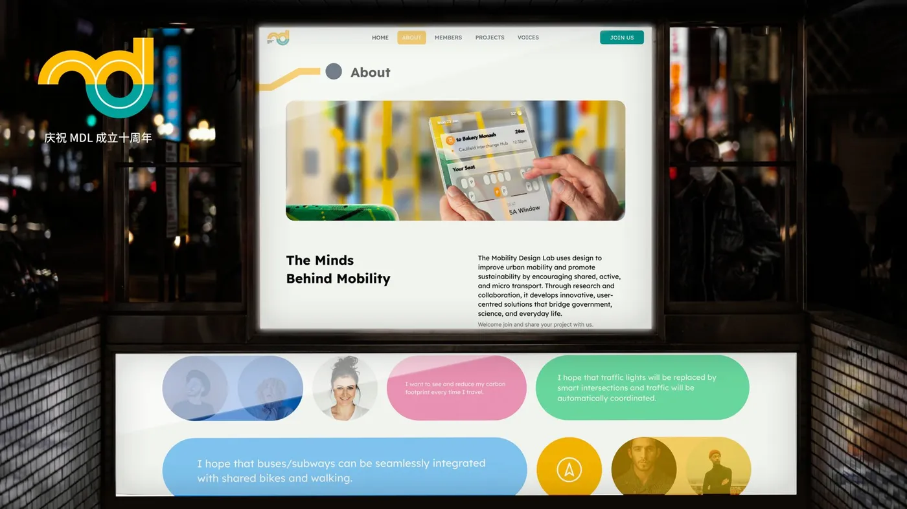
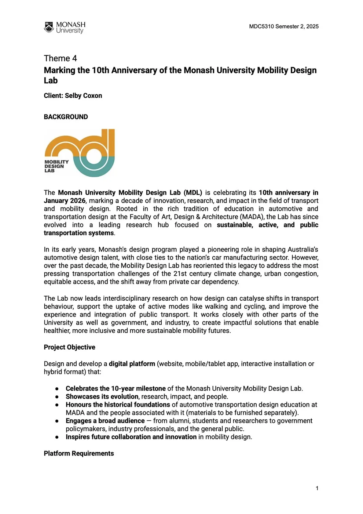
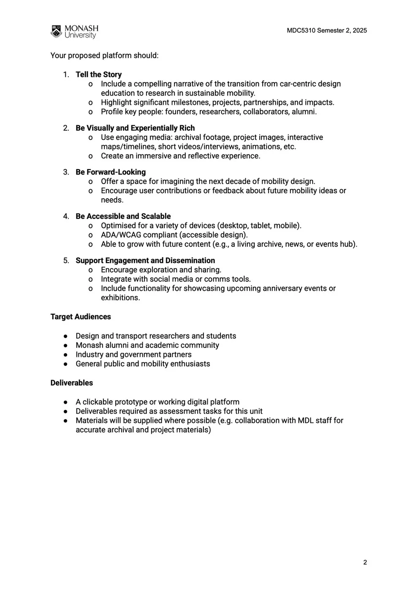
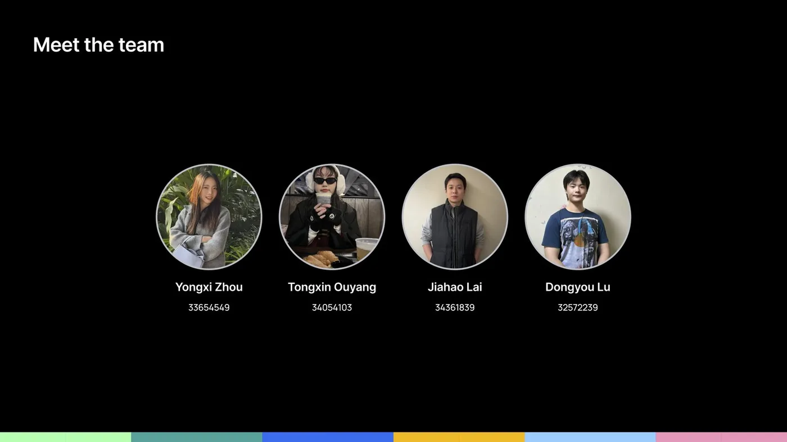
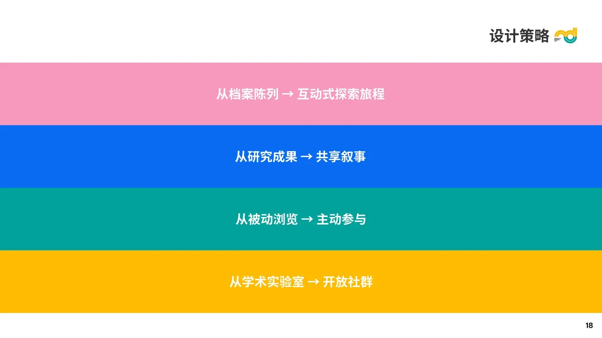
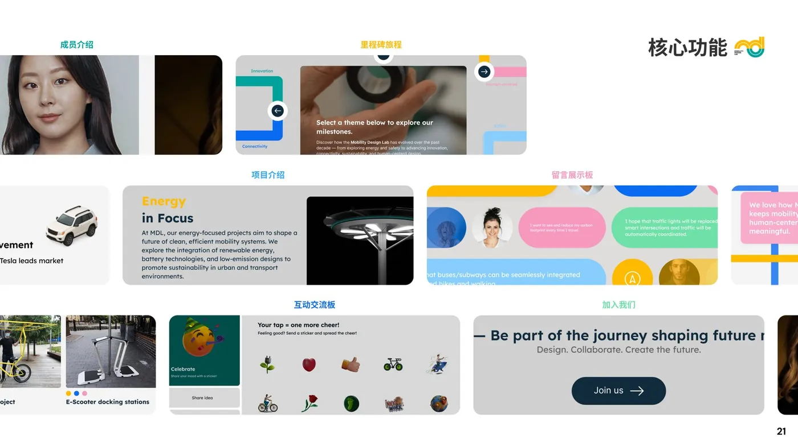
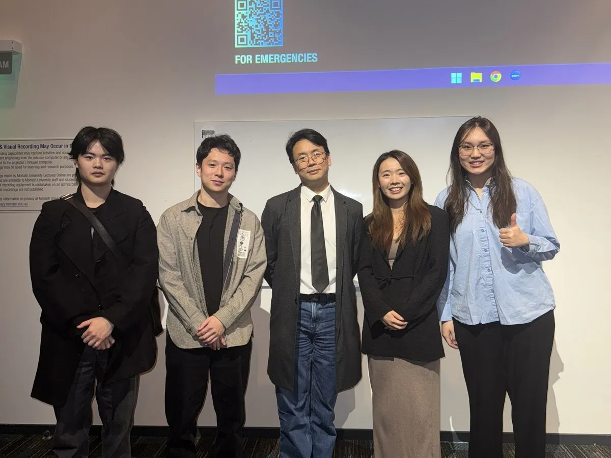
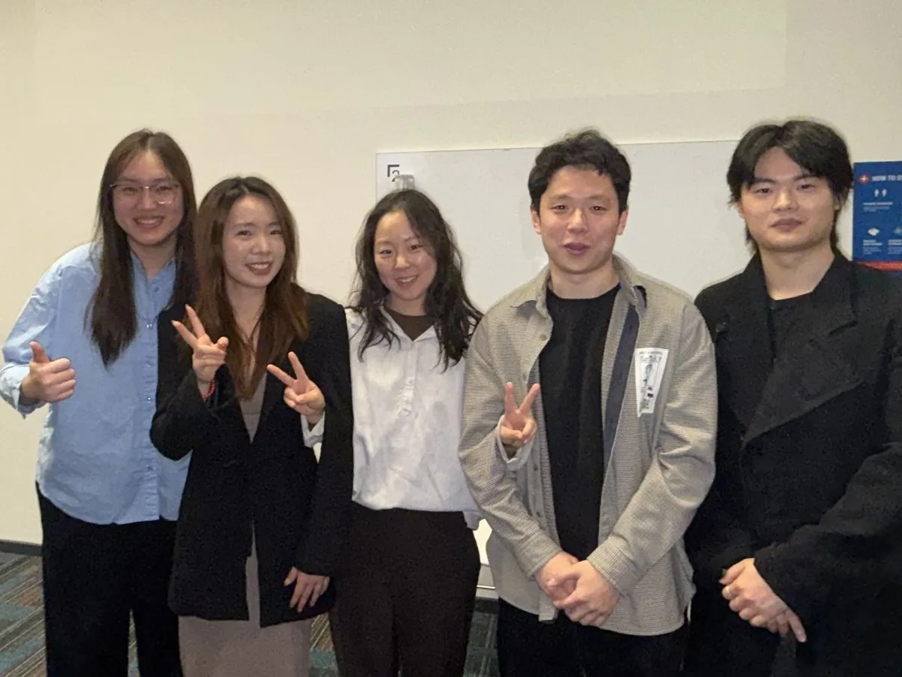
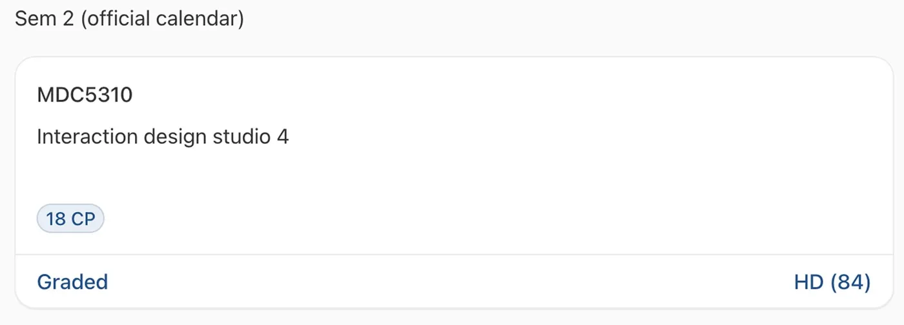

莫纳什大学移动设计实验室Monash Mobility Design Lab
NeoRoute — MDL 十周年互动平台NeoRoute — MDL 10th Anniversary Platform
将 MDL 十年的研究成果转化为一段可探索、可参与的互动叙事旅程——从档案陈列到开放社群。 Transforming a decade of MDL research into an explorable, participatory narrative journey—from archive to open community.

项目概述Overview
Monash Mobility Design Lab（MDL）是莫纳什大学下属的研究实验室，聚焦于探索可持续且以人为本的城市出行未来。2025 年是 MDL 成立十周年，核心挑战在于：如何将过去十年在研究与实验层面所产生的影响，以更具参与感的方式呈现给学术圈之外的更广泛受众？ The Monash Mobility Design Lab (MDL) is a Monash University research lab focused on sustainable, human-centered urban mobility futures. In its 10th anniversary year, the core challenge was: how to present a decade of research impact in a more engaging way to audiences beyond academia?
NeoRoute 是一个互动式网页平台，通过叙事驱动的设计与参与式功能，将 MDL 的发展历程、代表性项目与核心成员整合为一个可探索的数字体验——让不同受众得以深入了解其实验室的项目、成员与核心理念。 NeoRoute is an interactive web platform that, through narrative-driven design and participatory features, integrates MDL's evolution, representative projects, and core members into an explorable digital experience—allowing diverse audiences to deeply understand the lab's projects, people, and philosophy.
- 项目类型：团队项目 | 个人职责：UX / UI 设计
- 项目周期：8 周 | 合作方：莫纳什大学移动设计实验室（MDL）
- 课程：MDC5310 Interaction Design Studio 4 | 成绩：HD (84)
合作方背景Client Background


MDL 隶属于莫纳什大学艺术、设计与建筑学院（MADA），从早期的汽车设计教育演变为如今聚焦可持续出行的研究枢纽。通过跨学科、以设计为导向的方法，MDL 研究新兴技术、系统与用户体验如何在不同城市情境中共同作用，推动更加包容且具环境责任感的出行方式的发展。 MDL sits within MADA at Monash, evolving from early automotive design education into today's research hub for sustainable mobility. Through interdisciplinary, design-led methods, MDL studies how emerging technologies, systems, and UX interact across urban contexts—driving more inclusive and environmentally responsible mobility.
实验室负责人Lab Director
Monash Mobility Design Lab
团队介绍Team

四人团队各有所长，协作完成从信息架构、视觉设计到交互原型的全链路交付。我在其中负责 UX/UI 设计主导，包括设计系统搭建、核心界面设计与 Figma 原型制作。 Each team member brought unique strengths, collaborating end-to-end from IA and visual design to interactive prototypes. I led UX/UI design, including design system setup, core interface design, and Figma prototyping.
设计挑战Design Challenge
“在 MDL 迈入成立十周年之际，我们面临的核心挑战是：如何让实验室的研究成果在学术圈之外同样易于理解，并具备足够的吸引力。As MDL enters its 10th year, our core challenge is: how to make the lab's research equally accessible and compelling beyond academic circles.”
— Selby Coxon, MDL 实验室主任Lab Director
从汽车设计到可持续出行的转变，是 MDL 十年故事的核心主线。The shift from car design to sustainable mobility is the core thread of MDL's decade-long story.
用影像、原型、动画等媒介创造丰富且引人入胜的浏览体验。Use imagery, prototypes, and animation to create a rich, engaging browsing experience.
为下一个十年的出行设计留出想象与延展空间。Leave room for imagining and extending the next decade of mobility design.
跨设备适配，并符合无障碍合规要求，让所有人都能使用。Cross-device responsive and WCAG-compliant, usable by everyone.
支持社交分享与后续活动的持续展示与传播。Enable social sharing and ongoing showcases for future events.
设计策略Design Strategy
四条策略共同指向一个目标：把 MDL 从"以研究为核心的实验室"转化为"面向公众的对话平台"，让十周年不只是回顾，更是关于未来出行的开放讨论起点。 These four strategies share one goal: transform MDL from a "research-centric lab" into a "public dialogue platform"—making the 10th anniversary not just a retrospective, but an open starting point for discussing future mobility.
设计系统Design System
色彩系统Color System
主色（黄橙 / 青绿）作为品牌标识主色贯穿全站；强调色（粉 / 蓝 / 浅蓝 / 绿）用于功能分区与情感引导。圆角风格统一（组件 40px / 图片 20px），营造友好、开放的视觉气质。 Primary colors (amber / teal) carry brand identity throughout; accent colors (pink / blue / light blue / green) guide functional zones and emotional tone. Unified rounded corners (40px components / 20px images) create a friendly, open visual character.

方案与界面Solution & Interface
以下为 NeoRoute 的可交互 Figma 原型，支持直接点击体验完整的探索旅程。其余具体界面我会在后续单独补充展示。 Below is the interactive Figma prototype of NeoRoute—click through to experience the full exploratory journey. Other specific screens will be added separately later.
交互原型Interactive Prototype
↑ 嵌入式 Figma 原型。若上方区域空白，多为网络限制所致（Figma 在部分地区需联网 / VPN 才能加载），请点击下方按钮在 Figma 中直接打开。 ↑ Embedded Figma prototype. If the area above is blank, it's usually a network restriction (Figma may need VPN in some regions)—use the button below to open in Figma.
体验流程User Journey
探索Explore
时间轴 · 主题路径 · 入口节点Timeline · Themed paths · Entry points
发现Discover
项目 · 方法 · 成员Projects · Methods · Members
思考Reflect
未来设想 · 关键问题Future visions · Key questions
参与Participate
分享 · 回应 · 共创Share · Respond · Co-create

成果Results


NeoRoute 将 MDL 十年的研究成果转化为连贯、易于理解的互动叙事体验，支持用户在统一的数字体验中探索过去、当下与未来的出行研究，同时提升了公众参与度——让研究内容不再停留在论文与报告里，而是变成任何人都能触摸到的对话。 NeoRoute transformed a decade of MDL research into a coherent, accessible interactive narrative—supporting users in exploring past, present, and future mobility research within a unified digital experience while boosting public engagement. Research no longer stays in papers and reports; it becomes a dialogue anyone can touch.

项目反思Reflection
这是我第一次以「叙事驱动」的方式做 UX 设计——不是围绕功能清单或业务流程，而是围绕"讲故事"。过程中我学到三件事：第一，叙事驱动界面不等于"好看"，它要求信息架构本身就有故事线——用户滚动的过程就是阅读的过程，每个区块既是内容也是章节。第二，与研究导向型的利益相关者（如 MDL 的教授们）协作时，设计师的角色更接近"翻译者"——把学术语言转译成公众能感知的视觉与交互语言，这比做商业产品更需要对领域的深入理解。第三，系统层面的设计思维在这一项目中尤为关键：色彩、圆角、间距不是孤立的美学选择，而是服务于"开放、友好、包容"这一品牌定位的系统表达。这些经验对我之后做机器人 HMI 和车企座舱类项目都有直接的迁移价值。 This was my first time doing UX with "narrative-driven" design—not around feature lists or business flows, but around storytelling. I learned three things: First, narrative-driven interfaces aren't just "pretty"—the information architecture itself needs a story arc; scrolling is reading, each block is both content and chapter. Second, when collaborating with research-oriented stakeholders (like MDL professors), the designer acts more as a translator—converting academic language into visual and interaction language the public can perceive, requiring deeper domain understanding than commercial products. Third, systems-level thinking was critical here: colors, corners, spacing aren't isolated aesthetic choices but systematic expressions serving the "open, friendly, inclusive" brand positioning. These lessons transfer directly to future robotics HMI and automotive cockpit projects.